GAMES101笔记
2021年初有幸学习了闫令琪老师的《GAMES101：现代计算机图形学入门》，其论坛链接如下：
学习过程中与女朋友记录了一些课程笔记，分享在此，希望能够跟有同样爱好的朋友一起学习进步
坐标变换 - MVP
Model Transform：模型变换
放置模型物体位置
View Transform：视图变换
放置相机位置以及朝向，同时定义相机的向上方向，一般放置在原点，向-z方向看，向上方向是y。
移动相机时，我们需要先平移再旋转，因为将不规则位置旋转规则化位置比较困难，考虑从规则化的位置旋转当前相机位置，得到我们所需要的旋转矩阵的逆矩阵，又因为旋转矩阵的正交性，所以我们所求的矩阵即为逆矩阵的转置
Projection：投影
即将3D中的物体投影到2D屏幕上，根据是否体现近大远小又分为
Orthographic projection（正交投影）
放置好相机后，将z轴忽略，同时再将图象映射到[-1,1]^3的规范，正则（canonical）正方形里，具体的做法是将其中心移到原点处，再进行放缩
Perspeerective projection（透视投影）
将远平面上的点挤压成近平面的大小，再运用正交投影，所以透视投影的问题即转化为将远平面上的点如何挤压成近平面大小
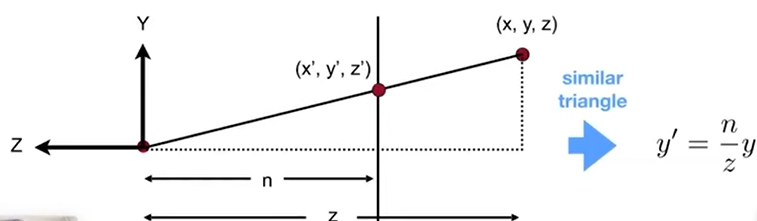
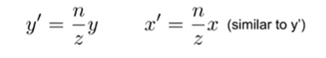
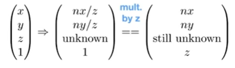
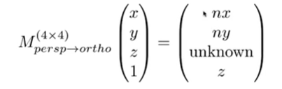
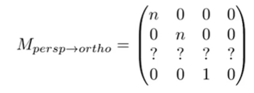
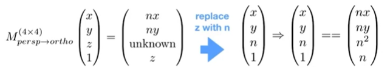
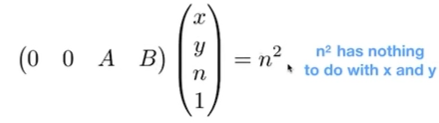
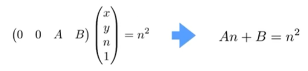
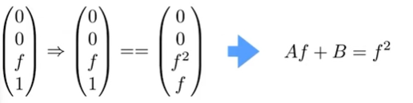
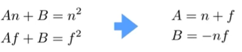
定义一个视锥只需要定义长宽比和可视角度
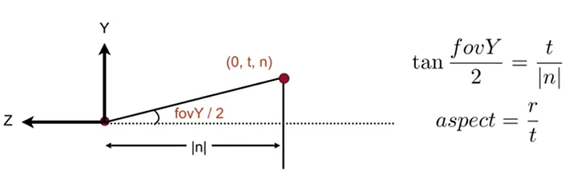
Rasterization（光栅化）
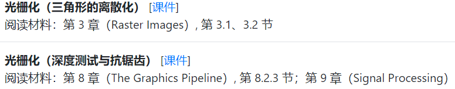
光栅化即是将物体呈现在屏幕上，我们将屏幕看成是像素的数组，且将每一个像素默认它只有一种颜色，由RGB来定义
Viewport transform：视口变换
我们将MVP变换之后的[-1,1]^3正方体的x，y拉伸为屏幕大小，忽略z轴，再将其一角移动到原点，使整个屏幕显示在坐标轴第一象限
成像设备：
早期：示波器 采用Raster Scan（隔行扫描）方式，隔行显示图象，由于人眼的视觉滞留原因，呈现的仍为完整画面，而工作量减半了，当前还在一些视频压缩中使用，但是会造成画面撕裂。
LCD（Liquid Crystal Display）光通过光栅之后发生扭曲，振动方向与光栅一致
LED（Light Emitting diode），Electrophoretic Display（例如kindle，刷新率低）
Sampling：采样
将一个函数离散化的过程
判断每一个像素的中心是否在三角形内，方法即是使用沿着三角形的三条边，计算三次叉乘，来判断像素中心是否在三角形内，若在边界上则自己处理，不硬性规定
我们只需要对轴向包围盒（AABB）内的像素点进行判断
Sampling Artifacts
走样（Aliasing）现象
锯齿（Jaggies）- 空间中的采样
摩尔纹（Moire）- 图片欠采样
车轮效应（Wagon wheel effect） - 时间中的采样
本质都是因为信号变换太快，导致采样频率跟不上
同样一种采样频率，采样不同的函数，无法区分，导致走样
Antialiasing：反走样
Filtering（滤波）：将信号某一区间的频率过滤掉
傅里叶变换能将一张图片从时域变换到频域，频域的中心为低频，边缘为高频，一般图片低频信号要远多于高频信号。我们可以在频域图中看到明显的十字，这是因为我们一般处理信号时将其视为周期性重复的信号，而图片一般情况下无重复，因为我们认为图片的左边界往外连接着右边界，即图片也是重复的，有无限多个，而左右边界一般差别较大，会有较大的信号变化。
高频信息表示图像中出现较强的变化，即呈现图象中的轮廓边缘
低频信息表示图像中不明显的边界特正，即图象的模糊显示
Convolution（卷积）：图形学中的卷积我们简化为运用不同的权重计算相邻信号的加权平均
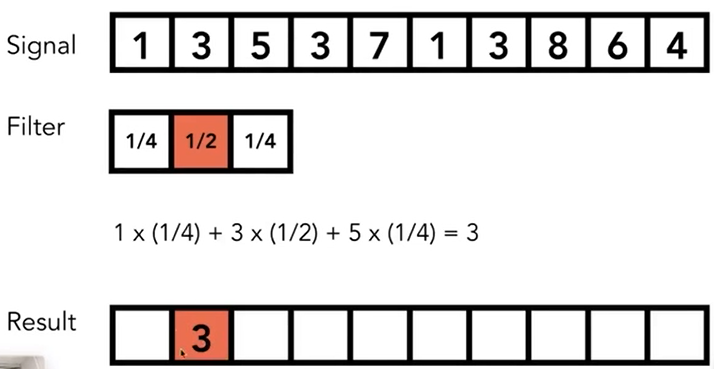
Convolution Theorem（卷积定理）：时域上两个图象的卷积等于频域上其两者的乘积
Box Filter（低通滤波器），当卷积盒的大小越大时，在频域上频率越低，即过滤后的图象越模糊
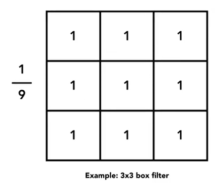
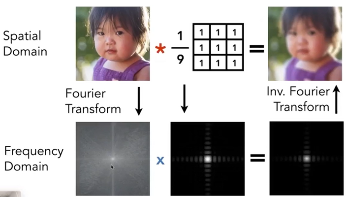
从频率的角度来说，采样就是在不断重复频域上的内容
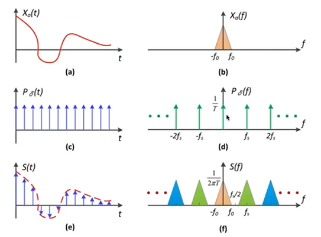
所以走样发生的原因就是，采样的频率不够快，导致原始信号和复制的信号发生了混叠
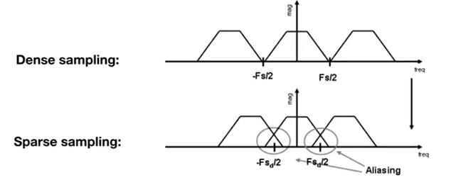
①增加采样率
②先模糊再采样
对应在频率上来说，即用低通滤波器去除原信号的高频信号，使频谱图覆盖的面积减小，从而避免混叠
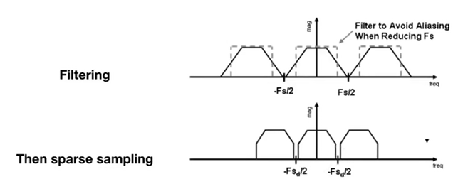
一般采用1-pixel-width box filter，即每一个像素单元求其平均，从而达到模糊的效果
像素求平均的方法
ⅠMSAA(MultiSampling Anti-Aliasing)：将一个像素视作划分成许多小的块，每一个小的块来判断是否在三角形内，再将这些小的块平均起来，即得到对于该像素区域的平均近似，注意并未提高分辨率，花销是计算了更多的采样点
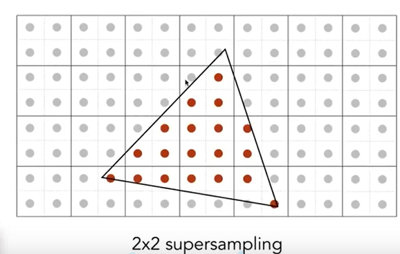
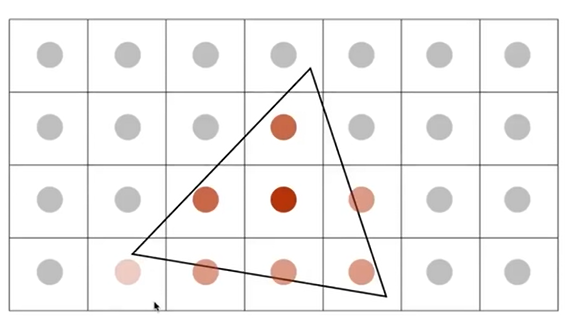
ⅡFXAA（Fast Approximate AA）：先得到一个有锯齿的图象，通过图像匹配找到有锯齿的边界，再更换为无锯齿的边界
ⅢTAA（Temporal AA）：复用上一帧的每个像素的值，即将MSAA的样本分布在时间上，并且当前这一帧没有引入任何新的计算量
Z-Buffer（深度缓存）
Painter’s Algorithm 油画算法
先将最远处的物体光栅化，然后由远到近依次光栅化
问题：当在深度上存在互相遮挡，无法确定层次
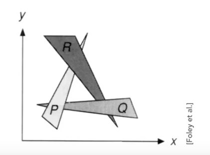
Z-Buffer
为了方便理解，此处的深度我们默认为物体到摄像机的距离，即深度越小离摄像机越近
同时生成两张图：frame buffer（最终的结果图象）和depth buffer（深度图）
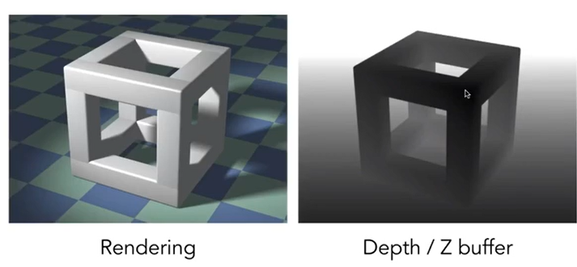
初始时，初始化深度图，所有的深度都是无限远的，之后将任意三角形覆盖到任意像素上，计算该像素点的深度，若该点的深度小于深度缓存中该点的深度，则将深度缓存中该点的深度更新为较小的值，该算法的时间复杂度为O（n）（n个三角形，每个三角形覆盖常数个像素），该算法的正确性与遍历三角形的顺序没有关系
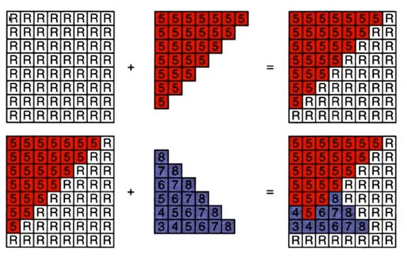
Shading（着色）
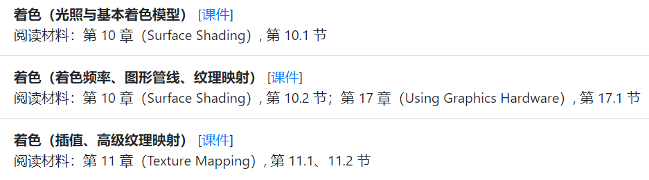
着色会引入明暗和颜色的不同，对不同的物体应用不同的材质，着色具有局部性，只考虑该物体，不考虑其他任何物体的存在，所以不生成阴影
Blinn-Phong Reflectance Model（布林-冯反射模型）
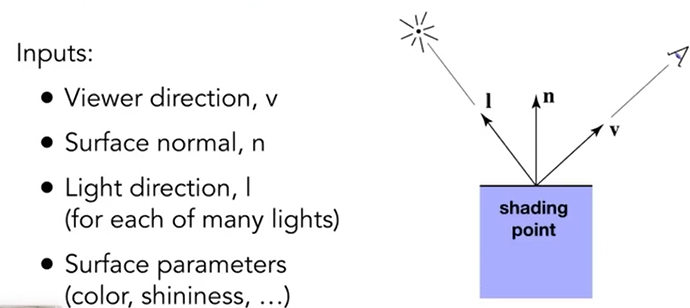
Diffuse Reflection（漫反射）
Lambert’s cosine law（兰伯特余弦定理）max(0,n·l),单位面积接收到的光强为直射光强乘以夹角余弦值，而夹角余弦值为平面法向量与入射向量的点乘，当两者夹角大于90°，即从物体背面照射时，对正面不产生影响，故取0
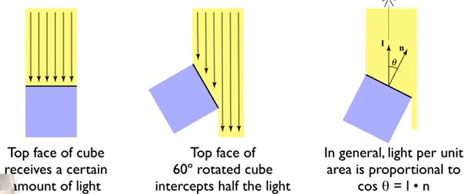
我们假设光线能量的传播没有损失，假设初始的能量强度为I，又随着不断传播，光能所在的球体半径不断增大，而球体表面积为4Πr^2，即一个距离光源距离为r的点，它到达的光强为I/r^2
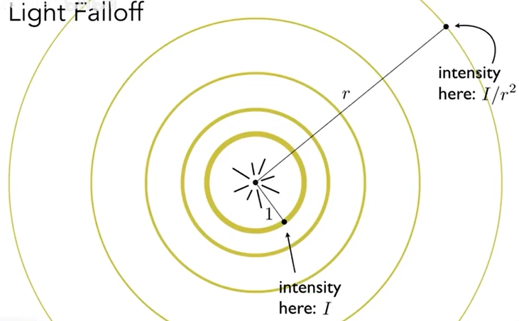
所以漫反射最终的光照强度为：
Ld = Kd(I/r^2)max(0,n·l)（Kd为漫反射系数）
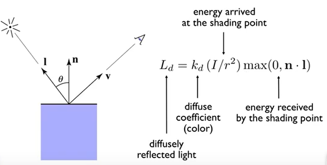
Specular Term（高光反射）
高光反射出现的原因是因为观测方向和镜面反射反向足够接近
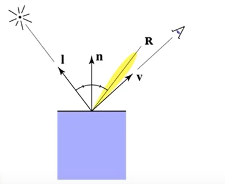
在Blinn-Phong模型中，即法线与半程向量足够接近，就可观测到镜面反射，而半程向量即将入射向量与观测向量相加后归一化
则Ls = Ks(I/r^2)max(0.cosα)^p = Ks(I/r^2)max(0,n·h)^p,其中Ks为高光反射系数
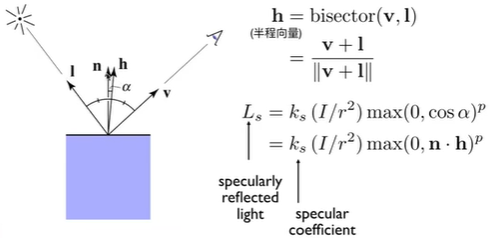
而其中的余弦值部分由于容忍度太高，导致角度较大时，仍处于一个高光的范围，所以需要加上一个指数p来限制高光的范围，一般p取100-200左右
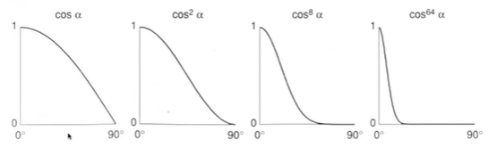
Ambient Term（环境光照）
因为环境光的生成非常的复杂，所以我们假设场景中的任何一个点受到环境光的强度都是相同的，为Ia，而Ka为环境光系数，因为每一个点的环境光都一致，所以环境光实际上为一常数，其作用是保证场景中没有点完全是黑的
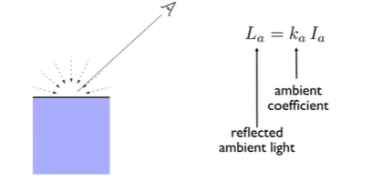
最后，我们三种光照相加在一起，即为完整的Blinn-Phong反射模型
L = La+Ld+Ls = KaIa + Kd(I/r^2)max(0,n·l) + Ks(I/r^2)max(0,n·l)^p
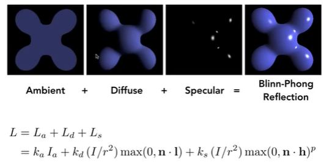
Shading Frequencies（着色频率）
Flat Shading（平面着色）
以每一个三角形平面为单位，计算每一个平面的法线，然后计算出着色结果
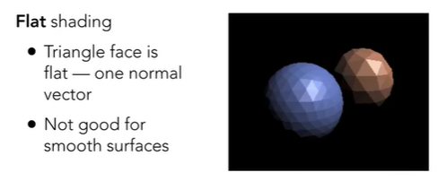
Gouraud Shading（高氏着色）**
以每个顶点为单位，计算出每一个顶点的法线，然后进行顶点着色，中间运用插值计算
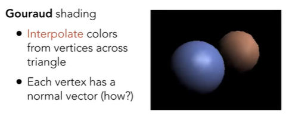
Phong Shading（冯氏着色）
以每个像素为单位，计算出每一个像素的法线，然后进行像素着色
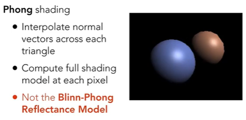
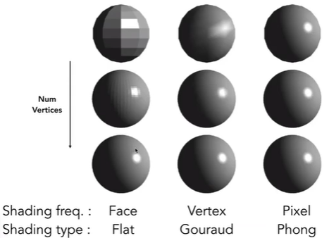
顶点的法线计算
当物体为球体时，顶点法线即为球心与其连线，当物体为不规则物体时，则顶点法线为其相邻四个面的法线的平均，可以通过根据面的面积来求加权平均，以获得更好的法线
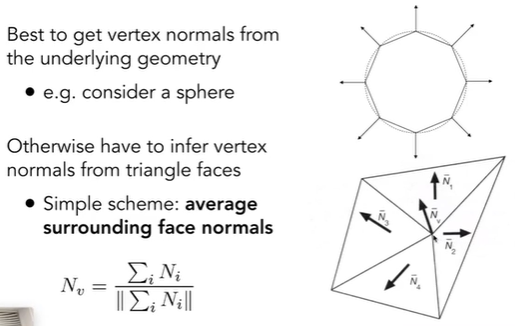
实时渲染管线
我们的输入是一端三维空间中的点，通过MVP投影，投影到2D屏幕中，之后这些点会形成三角形，之后通过光栅化来将三角形离散化为许多像素，之后进行着色，显示
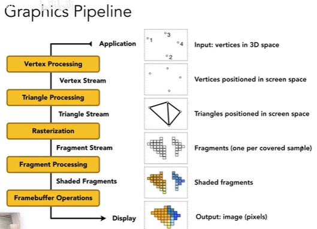
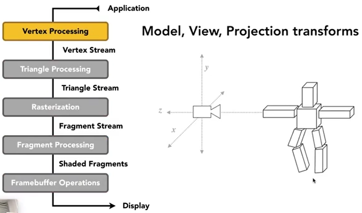
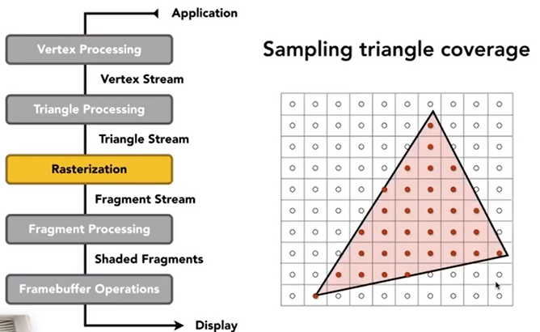
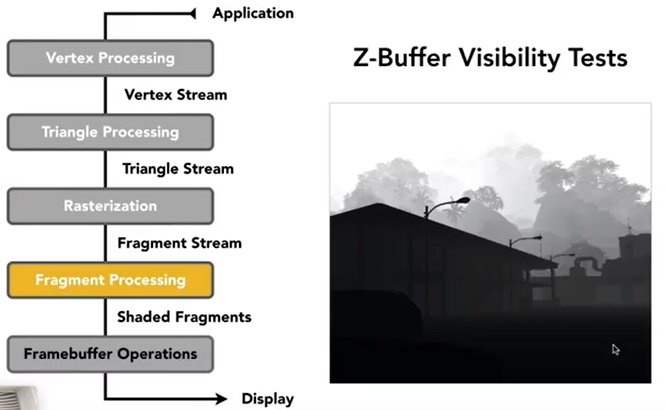
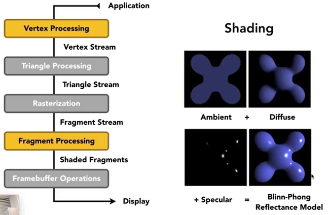
可以看到着色同时可以发生在顶点操作和像素操作上，这取决于着色频率，而Shader则是控制顶点和像素如何着色的可编程部分，在Shader中你只需要管其中的一个顶点或者像素如何着色，之后所有的顶点或者像素都会同样操作，VertexShader（顶点着色器），PixelShader（像素着色器）
Texture Mapping（纹理映射）
纹理映射的根本作用是定义物体不同点的基本属性
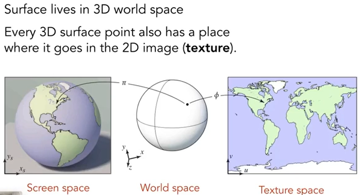
任何一个三维物体的表面都是二维的，纹理映射即将空间物体上的一个三角形射到纹理表面上，而纹理的坐标一般采用u-v来表示，两者都∈[0,1]，不同的位置可以使用相同的纹理
Barycentric Coordinates（重心坐标）
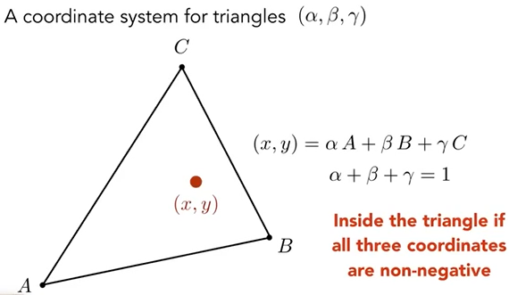
若该点在三角形内，还需满足α，β，γ都非负
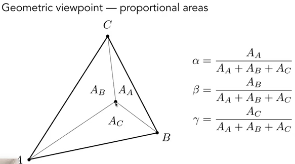
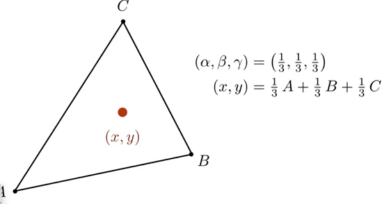
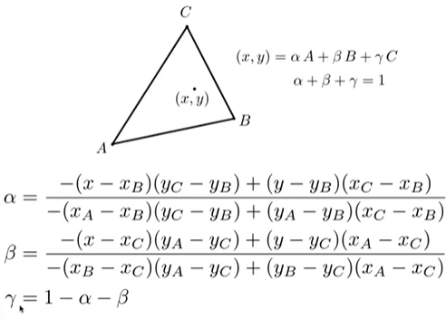
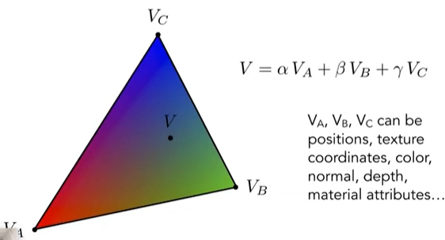
在三维中的属性，要在三维空间中做插值，再投影到二维空间去
根据插值获得三角形上每一点的坐标（u,v），去纹理上查询该坐标的值，该值即为漫反射的系数Kd
Texture Magnification
①当一个高分辨率的物体，贴上一个低分辨率的纹理时，对于墙上的任意一个点，我们都可以找到纹理上对应的位置，即texel（纹理元素），但是该位置对应的值不是一个整数，所以需要采用新的插值算法
Bilinear interpolation（双线性插值）
取对应位置相邻的4个texel
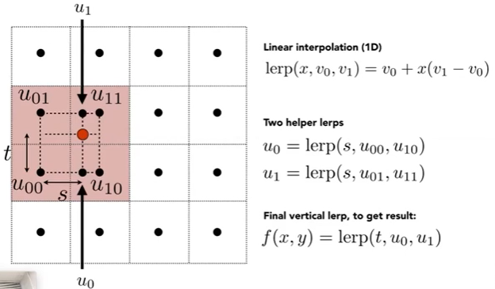
Bicubic interpolation
取对应位置相邻的16个texel
②当一个低分辨率的物体，贴上高分辨率的纹理时，会产生严重的锯齿，发生走样
近处的像素覆盖的纹理区域较小，远处的像素覆盖的纹理区域较大，我们用大片面积的平均值来表示该像素的纹理显然会出现问题，一种方法是采用SuperSampling的方法，可以解决问题，但是会造成额外的大量性能消耗
我们可以换一个思路，不采取采样的方法，利用Mipmap来迅速求一个区域内的平均值
Mipmap
可以且仅可以做近似地，正方形的范围查询
在渲染之前，先生成对应的mipmap，共有log2(n)个（分辨率为n*n），共引入了额外的1/3的存储量
将三角形中像素点对应找到纹理上的位置，同时找到该点相邻上方和右方的点的对应位置，从而得到一个纹理坐标上的三个点，计算两条边长，取最长的一条边，以第一个像素点为中心，最长的边长度为边长，将该像素点移动导致纹理坐标的改变近似到这个正方形区域内，我们就可以在第log2（L）层mipmap上去进行双线性插值查询其近似值。当我们查询的位置并不是整数层，则可以在相邻的两层再次进行一次插值，即进行一次三线性插值
但是mipmap近似一个非正方形的区域平均值，会出现overblur（过度模糊）
这是我们可以采用Anisotropic Filtering（过滤）
Anisotropic Filtering（各向异性过滤）
分为竖直和水平两个方向进行压缩，开销变为原本的三倍
因为每一个像素对应到纹理坐标上，不一定是一个标准的形状，各向异性过滤可以帮助去近似查询一个矩形区域平均值
EWA filtering用椭圆来近似估计，但是需要多次计算
Environment Map（环境光照）
纹理可以用来表示环境光，来投影到物体上作为环境光，效果要好于点光源
我们都假设环境光来源于无穷远处，因此我们只需记录它的方向信息，没有实际的深度意义，为了记录不同方向上的光线信息，可以采用不同的方式来保存环境光照
Spherical Environment Map（球面环境光照）
我们可以将环境光保存在一个球体上，并且把它展开，但是它并不是一种均匀描述，会出现扭曲的现象
Cube Map
将光照投影到正方体的六个表面，因为它六个面都是均匀的，很少发生扭曲，但是因为有六个面，我们需要先计算出光线在哪个面上
Bump Maping（凹凸贴图）
对于凹凸不平的物体，我们可以采用凹凸贴图来进行着色，而不需要在几何形体上改变物体
Displacement mapping（位移贴图）
跟凹凸贴图类似，但是在实际上改变了三角形顶点的位置，但是它需要三角形的模型比较细致，才能够捕捉纹理的变化，不然同样会出现走样，在DirectX中，我们先采用较为粗糙的三角形模型，在进行位移贴图计算时，如果发现三角形不够细致，再将三角形模型拆分成若干个小的三角形，细化模型
纹理还有很多其他的作用，比如制作一个3D纹理，从而可以看到物体内部的样子。再比如我们可以先进行环境光遮蔽等一系列原本在渲染时计算的东西，将其修改在纹理上，从而减小渲染时的性能消耗
Geometry（几何）
1.隐式几何
CSG(实体几何构造)
用已知常用的几何图形，进行并交补等运算，得到新的几何图形
SDF（有号距离函数）
我们计算空间中的每一个点距离几何形体的最近距离，并且得到一个对应的距离函数
LSM（水平集）
将SDF中等距离的所有点连接在一起，即形成了水平集，其中距离为0的所有点的集合即为该几何物体的几何形体
Fractals（分形）
与自身形体相似的物体不断重复
2.显示几何
Point Cloud（点云）
通过大量的点堆叠成相应的几何模型
Polygon Mesh（多边形面）
用三角形或多边形面组成几何物体
Bezier curves(贝塞尔曲线)
贝塞尔曲线的第一个点为曲线起始点，前两个点决定了曲线起始点位置的切线方向，最后一个点为曲线的结束点，后两个点决定了曲线结束位置的切线方向
在b0b1，b1b2上各取一点，分别为b’和b’’，在b’b’’上取一点b’’’
其中b0b’ ：b’b1 = b1b’’ : b’’b2 = b’b’’’ : b’’’b’’
让b’和b’’在相应线段上移动，取得的b’’’的点集即为所求曲线
四个点同理
贝塞尔曲线不会超出给点控制点所形成的凸包的范围
C0连续，两段贝塞尔曲线连接在一起即为C0连续
C1连续，两段贝塞尔曲线的连接处的三个控制点在同一条直线上，且长度相等
Spline（样条曲线）
其具有局部性，修改其中任意一个控制点，只会修改部分曲线段
Bezier Surface（贝塞尔曲面）
画出多根贝塞尔曲线后，以贝塞尔去线上的点作为新的控制点，绘制新的贝塞尔曲线，其贝塞尔曲线的集合即为贝塞尔曲面
Mesh subdivision
将三角形网格拆分为更细致的三角形
Loop Subdivision
在Loop细分的过程中，可以连接一个三角形三条边上的三个中点，即从一个三角形细化为四个三角形
之后我们需要调整增加三角形后的顶点调整，对于新增的顶点，将两个三角形重合的边的两个点设为A,B，另外两个点设为C,D，将新增的顶点设置为3/8（A+B）+1/8（C+D）
对于旧的顶点，我们既要考虑其本身，也要考虑与其相连的旧顶点，其中，n为该顶点的度（即与该顶点相连的边的数量），u为与n相关的一个数，根据n和u，可以得到新顶点的位置调整
Catmull-Clark Subdivision
找出网格中的非四边形面，并取非四边形面各边的中点与非四边形面中点进行连接，从而将非四边形面化为四边形面，而在进行一次Catmull-Clark细分之后，网格会增加非四边形数个奇异点（即度不为4的点），之后再进行细分，将不再增加奇异点
Catmull-Clark细分之后的顶点调整，分为三类，如下图所示
两种细分的差异：Loop细分只能用作三角形网格，而Catmull-Clark细分可以用作各种类型的网格
Mesh simplification
将网格简化，用更少的格子表示
我们采用边坍缩来实现化简
如下图所示的五个点，若想将其简化为三个点，我们需要引入二次误差度量的概念，即新的替代点到之前的四条边的距离的平方和最小，我们在进行简化时，计算坍缩每一条边的二次误差度量，然后从小到大依次进行坍缩。要注意的是每坍缩一条边，要重新计算与其连接的边的二次误差度量， 所以需要一个数据结构来进行对数据的实时修改，并方便地获取最小值，因此采用优先队列，或堆来实现。因此整个算法就是坍缩二次误差度量最小的边，再对数据进行更新，再坍缩当前最小的边，再更新……即贪心算法
Mesh regularization
将网格规则化，化成大小相似的多边形
Shadow Mapping
核心：不在阴影中的点必须同时被摄像机和光线同时看到
首先，从光源看向场景，并记录下所能看到的物体的深度
然后我们通过摄像机来看场景，所能看到的每个点再投影回光源位置，查看光源处记录的该方向上的深度，并计算该点到光源的深度，比较两者是否相同，如果相同，则该点可见，若不相同，则该点处在阴影中
阴影可以分为软阴影和硬阴影，当一个点完全看不到光源，则为硬阴影，若只能见到一部分光源，则为软阴影，点光源一定不会出现软阴影，因为软阴影一定是因为光源有一点的大小，导致存在半影的现象
Ray Tracing（光线追踪）
光栅化的问题：
- 难以实现一些全局的效果
- 多用于实时渲染（光线追踪多用于离线渲染）
图形学中光的三个约定：
- 光沿直线传播
- 光穿过物体时不发生碰撞
- 光经过若干次的反射和折射，最终会进入人眼
判断一个像素点的颜色：
- 从摄像机出发，与该像素点进行连线，得到直线与场景中的物体所相交的第一个点（其后相交的点无需考虑）
- 再由光源出发，看是否能照射到该点
- 若能，则将该点的颜色经过计算，赋值给该像素点
Whitted-Style ray tracing
光线在场景中会出现多次的折射与反射，在每一个反射或者折射的点处，都与光源连接一条线，若光源能够直接照射到该点，则该点的颜色则应该按照一定的权重（根据能量损失等来计算）来加权计算该像素点的颜色
定义一条光线：
- 起始点
- 方向向量
光线与球体**相交**
光线方程：
球体方程：
怎么求交点？交点满足两个方程，只要将其联立即可求解。
光线与其他不规则体**相交**
计算光线与物体相交的用法：
- 可以用来计算阴影，光照等等
- 可以判断一个点是否在物体内部，原理如下：任意一封闭的曲线（？？？？？），在该平面内任意取一点，向任意方向发射一条光线，若与该曲线的交点为奇数个，则说明该点在封闭曲线内部，若为偶数个，则在封闭曲线外部
光线与三角形**相交**
判断一个光线是否一个三角形相交：
- 其实只需要求出光线与该三角形所在平面的交点
- 再判断这个点是否在三角形内即可，后一步之前已经说过解决办法，所以我们只需要求出光线与三角形所在平面的交点即可
平面的表示：
- 点P
- 法向量N
- 平面上的点: p:(p-p’) . N = 0（平面上任意一个线段与法线垂直）
- 可展开为(ax+by+cz+d=0)
将光线的方程与平面的方程联立（代入），求交点t（需要检查t的范围）
Moller Trumbore Algorithm
将三角形所在面上的点用重心坐标来表示（用三角形三个顶点P0,P1,P2表示，系数和为1且大于0则点在三角形内部），与光线方程联立
计算t，b1，b2，若1-b1-b2，b1，b2都大于0，则该光线与该三角形相交
Bounding Volumes
用包围盒将物体包裹起来，若光线与包围盒都没有相交，则不可能与物体相交；相交时，再一一判断内部的物体是否与光线相交
以此提升光追效率，加速结构
包围盒如：球、长方体
Axis-Aligned Bounding Box(AABB，轴对齐包围盒)
轴对齐包围盒即每个面都与坐标轴组成的面平行
以2D举例，将长方体的包围盒分为两个对面（slab），分别计算光线进入两个对面的点(Tmin)和离开对面的点(Tmax)，之后取Tenter=max{tmin}，Texit=min{tmax}，作为光线与包围盒的交点。
如果tenter < texit，说明光线应该是在包围盒中停留了。
同理可扩展到3D。
但是光线并不是一条直线，而是一条射线
- 当Texit < 0 时，包围盒处于光线的后方，不存在交点
- 当Texit >= 0 并且 Tenter < 0 ，光源本来就在包围盒中，存在交点
- 所以，当且仅当 Tenter < Texit && Texit >= 0时，光线与包围盒相交
包围盒网格化
我们在创建一个包围盒后，将其网格化，找出其中物体覆盖的网格并将其标记
将光线经过的格子遍历，若格子是包围盒（的一部分），测试其中的物体与光线是否相交
为了保证效果和效率，格子的经验值满足下式
三种空间划分的方法
Oct-Tree
八叉树，将3D空间中的场景切三刀分为八份（例子中为2D平面），终止条件自己设置
KD-Tree
类似于二叉树，每一次划分用一刀将场景分为两份
BSP-Tree
通KD-Tree，但是划分可以为斜线
当光线照射包围盒时，我们根据KD-Tree的划分，可以类似于二分查找的思想，对碰撞的物体进行查找，但是KD-Tree存在问题，即一个物体存在多个划分后的包围盒内
Bounding Volume Hierarchy(BVH)
避免了一个几何结构出现在多个叶子节点里的问题，但是它并不是严格地将物体划分开
先找到包围盒，然后将场景中的物体划分为两部分，在分别计算两部分地包围盒，之后继续重复之前的操作，直到可以停止为止
我们总是选择最长的轴进行划分，并且优先选取中间的物体
Radiometry（辐射度量学）
Radiant flux
Radiant intensity
radiant intensity 是（一个点光源发射出的）单位立体角（solid angle）上的能量
单位为cd(candela)（7个国际单位制之一）
角和立体角：
立体角：单位面积/半径平方
微分立体角：
对于球面模型，intensity的计算：（不会衰减）
Irradiance
是（垂直的）单位面积上的能量
与光线垂直的表面的面积（与面法线和光线的夹角有关），会（随半径）衰减
Radiance
radiance 是在单位立体角且在单位面积上的（发射的、反射的、传递的、吸收的）能量
radiance 与 irradiance 和 intensity 的关系：
vs irradiance ：
- irradiance：dA 接收到的总能量
- Radiance：dA 从某方向 dw （立体角）上接收到的能量
BRDF
Bidirectional Reflectance Distribution Function 双向反射分布函数
定义某个能量在每个方向上反射的能量如何分配
输入入射角，出射角，入射能量，返回出射能量
反射的理解：光线打到某个物体表面被吸收，从某个方向发射出去
具体地，从某个方向 dwi 来的radiance 打到 dA，被表面吸收(irradiance)，从另一个方向 w 发射出去(radiance
递归反射
Rendering Equation
半球
所有限制在物体表面的光线传播满足下面的渲染方程
Reflection Equation
包括面光源
包括反射的物体的光线
Global Illumination
最终所得到的L即为全局光照，其右侧的第n项，分别表示了经过n次反射的光照
Monte Carlo Integration
Probability Distribution Function（PDF）
在积分域内不断采样，得到对应点的函数值，将其看为一常数，则将该积分化为求一矩形面积，高度为该函数值，长度为b-a，将n个采样结果相加求平均，n越大，则结果越接近实际值
Path Tracing
Direct Light
运用Monte Carlo算法解决渲染方程
一个着色点我们假设其不发光，则该点的radiance即为四面八方来的光与BRDF作用之后
反射到观察方向上，任何一个ωi，反射到ωo，再对整个球面积分
Global Illumination
因为单个光源发射出N条光线，整个场景中的光线会成指数爆炸增长，只有当N为1时，不会爆炸，因此我们修改之前的想法，总是只有一条光线射出
同一个像素点，有多个paths经过，将每一个path得到的颜色求和平均，即为该像素点的颜色
但此时仍然存在问题，因为代码中存在递归，但是当前的递归代码没有停止的出口
Russian Roulette
当光线照射到物体时，事先设置好一个概率P，则有P的概率光线会反射出一条光线，即再次射出一条光线，最终返回的值为Lo/P，而另外1-P的概率不会发射反射光线，则最终获得的能量期望，仍为Lo，这样递归便会概率地结束了
但此时算法的效率仍然不高，因为均匀地采样时，绝大多数的光线都被浪费了，为了提高效率，我们可以修改成在光源上采样，避免光线的浪费
但是这样又出现了一个问题，Monte Carlo算法本身的积分是取样在球面上的
因此需要将渲染方程修改为dA的积分，而不是dω的积分
即可得如下图所示的式子
在最后，在进行一次优化，由于在光源上采样，所以如果从光源上发出的光线在路径上碰到了其他的物体，则不需要再进行之后的计算
点光源不好进行路径追踪，可以将其做成一个小面积的面积光源
仍需自己去了解的东西：
The Appearance of Natural Materials（外观与材质）
Materials
Material == BRDF
Diffuse/Lambertian Material（漫反射材质）
Glossy Material（光滑材质）
Ideal Reflective/Refractive Material(理想全反射材质)
出射光方向+入射光方向 = 法线方向
Specular Refraction
当ηi > ηt且使得(ηi/ηt)^2*（1-cosθi^2）> 1，则发生全反射

Fresnel Reflection/Term（菲涅尔项）
表示有多少能量被反射
Dielectric（绝缘体）
Conductor（导体）
菲涅尔项的计算方法
但是计算过于复杂，我们将其近似
Schlick’s approximation
Microfacet Material(微表面材质)
从远处看到的是材质，从近处看到的是几何形体
在微表面材质中，我们将表面视作有大量的小镜子
用其表面的法线分布来表示不同的材质
F(i,h)：Fresnel term，表示被反射的能量总量
G(i,i,h)：shadowing-masking term，为了修正入射角过大，导致出现相互遮挡的现象
D(h)：distribution of normals，表示表面法线的分布
Isotropic/Anisotropic Materials(BRDFs)（各向同性/各向异性材质）
当满足如下条件时，为各向异性材质
BRDF的属性
BRDF是非负的
BRDF为线性的，可以拆分开再相加
交换入射方向和出射方向，得到的BRDF相同
BRDF不会使能量变化，能量守恒
各向同性材质可以看作是三维的
测量BRDF
枚举所有的入射和出射角度，测量BRDF